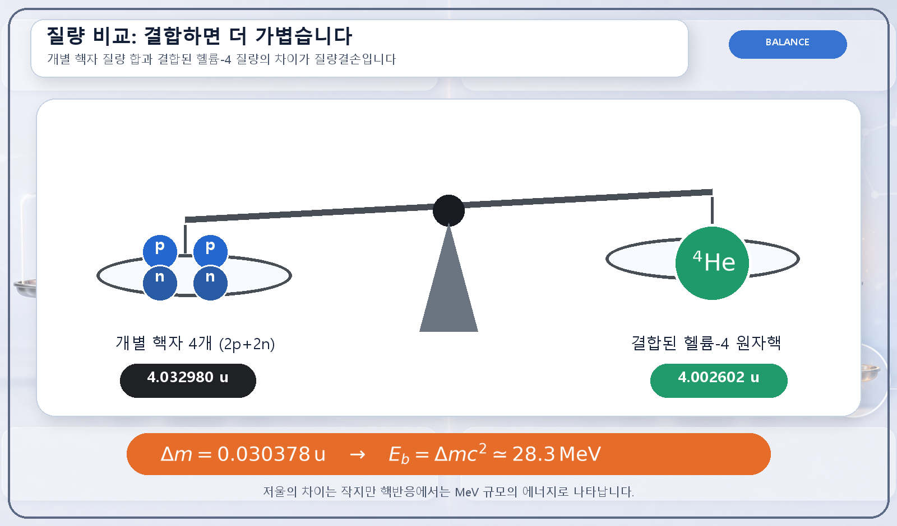
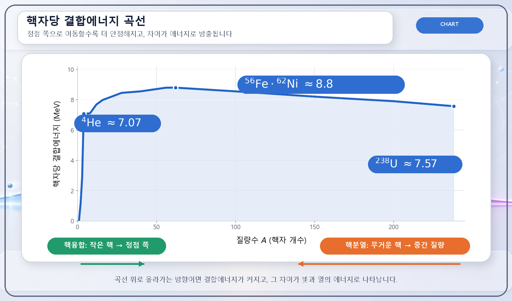
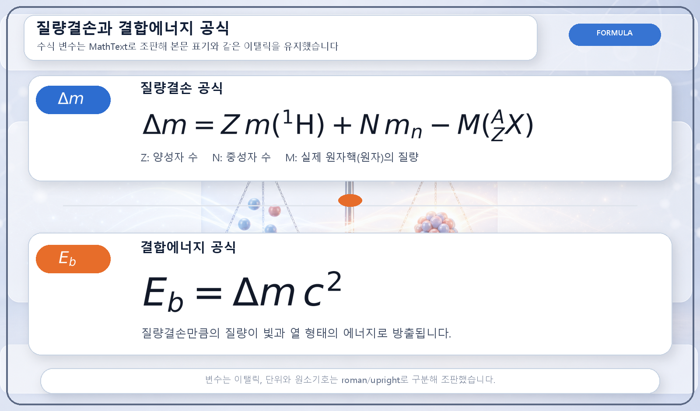
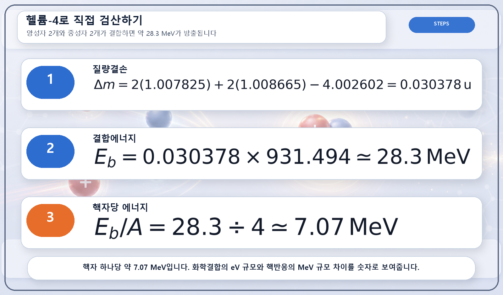

핵물리 기초 · 결합에너지
질량결손과
결합에너지
원자핵이 결합할 때 줄어든 질량이 핵분열·핵융합 에너지로 전환되는 원리
질량결손은 따로 존재하는 양성자와 중성자의 질량 합계에서 결합된 원자핵의 실제 질량을 뺀 값입니다. 줄어든 질량은 사라진 것이 아니라 원자핵을 묶는 결합에너지와 방출된 빛·열·입자의 에너지로 전환됩니다.
질량과 에너지의 등가성
우라늄 1그램이 석탄보다 압도적으로 많은 에너지를 낼 수 있는 이유는 연료의 질량 전체가 한꺼번에 없어지기 때문이 아닙니다. 핵반응 전후에 생기는 매우 작은 질량 차이가 막대한 에너지로 바뀌기 때문입니다. 이 관계를 나타내는 식이 E=mc²입니다. 여기서 에너지 E는 질량 m에 빛의 속도 c의 제곱을 곱한 값이므로, 극히 작은 질량 차이도 큰 에너지에 대응합니다.
두 물체가 서로 끌려가 충돌하고 하나로 합쳐지는 상황을 생각하면 이 원리를 이해하기 쉽습니다. 서로 가까워지는 동안 얻은 운동에너지가 충돌 뒤 빛과 열로 빠져나가면, 합쳐진 물체의 질량은 처음 두 물체의 질량 합계보다 아주 조금 작아집니다. 빠져나간 에너지까지 함께 측정하면 전체 질량-에너지는 그대로 보존됩니다.
원자핵 결합에서 나타나는 질량 차이
원자핵에서도 같은 현상이 일어납니다. 양성자와 중성자를 각각 떨어뜨려 놓았을 때의 질량을 모두 더한 값은, 이 핵자들이 핵력으로 결합해 만든 원자핵의 질량보다 큽니다. 두 값의 차이를 질량결손 Δm이라 하고, 여기에 빛의 속도 제곱을 곱한 ΔE=Δmc²가 원자핵의 결합에너지입니다.
결합에너지는 원자핵을 구성요소로 완전히 분리하기 위해 외부에서 공급해야 하는 에너지이기도 합니다. 결합에너지가 클수록 핵자들은 더 단단히 묶여 있으며, 같은 질량수라면 핵자 한 개당 결합에너지가 큰 핵종이 일반적으로 더 안정적입니다.

핵자당 결합에너지 곡선
핵자당 결합에너지를 원자핵의 질량수에 따라 배열하면, 가벼운 핵에서 빠르게 높아지고 철·니켈 부근에서 정점에 도달한 뒤 무거운 핵으로 갈수록 서서히 낮아지는 곡선이 나타납니다. 이 곡선은 핵분열과 핵융합이 서로 반대 방향의 반응이면서도 모두 에너지를 방출하는 이유를 보여줍니다.
우라늄과 같은 무거운 핵이 중간 크기의 두 핵으로 나뉘면 생성물의 핵자당 결합에너지가 높아집니다. 수소처럼 가벼운 핵들이 결합해 헬륨이 될 때도 같은 방향으로 핵자당 결합에너지가 높아집니다. 반응 전후의 결합에너지 차이는 운동에너지와 감마선 등의 형태로 방출되며, 이에 대응하는 만큼 최종 생성물의 질량이 작아집니다.
철-56이 결합에너지 곡선의 대표적인 정점으로 자주 소개되지만, 정밀한 값으로는 니켈-62의 핵자당 결합에너지가 근소하게 더 큽니다. 철이 널리 알려진 데에는 별 내부의 핵반응과 원소 생성 과정에서 갖는 중요성도 작용합니다.

헬륨-4 질량결손 계산
질량결손은 원자질량단위 u로 계산할 수 있습니다. 양성자 수를 Z, 중성자 수를 N, 결합된 원자핵의 질량을 M이라고 할 때 질량결손은 Δm=Zmp+Nmn−M으로 나타냅니다. 원자질량을 사용한다면 전자의 수와 질량을 일관되게 반영해야 하므로, 핵질량과 원자질량을 섞지 않는 것이 중요합니다.

양성자 2개와 중성자 2개로 이루어진 헬륨-4의 예에서는 질량 차이가 약 0.030378 u이고, 이에 대응하는 전체 결합에너지는 약 28.3 MeV입니다. 핵자 네 개로 나누면 핵자당 결합에너지는 약 7.07 MeV가 됩니다.
화학반응에서 원자 하나가 주고받는 에너지가 보통 전자볼트(eV) 규모인 데 비해 핵반응은 메가전자볼트(MeV) 규모입니다. 1 MeV는 100만 eV이므로, 핵반응과 화학반응의 대표적인 에너지 규모가 약 백만 배 차이 나는 이유를 이 단위 비교에서도 확인할 수 있습니다.

핵융합·핵분열·화학반응의 에너지 규모
태양에서는 수소 핵이 결합해 헬륨으로 바뀌는 핵융합 과정에서 질량 일부가 복사에너지로 전환됩니다. 원자력발전소에서는 우라늄-235 등의 핵분열 생성물이 원래의 무거운 핵보다 더 높은 핵자당 결합에너지 상태에 놓이면서 에너지가 방출되고, 이 에너지가 냉각재를 가열하고 증기터빈을 구동합니다.
나무가 타거나 화약이 폭발하는 화학반응에도 질량-에너지 등가성은 적용됩니다. 다만 화학반응은 주로 원자핵 바깥의 전자 결합이 변하는 과정이어서 질량 변화가 핵반응보다 훨씬 작습니다. 따라서 일상적인 화학 계산에서는 질량보존법칙이 충분한 근사이지만, 핵반응에서는 질량과 에너지를 합한 전체가 보존된다는 관점이 필요합니다.